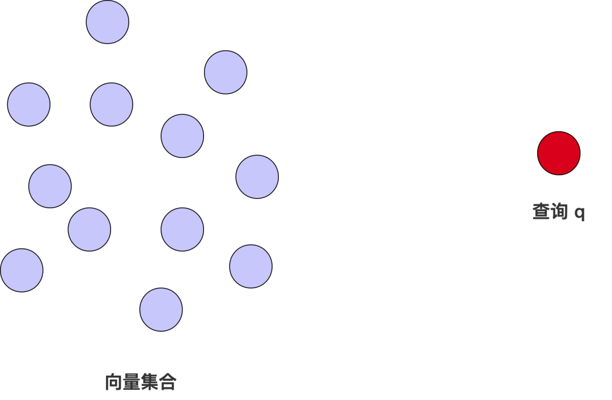
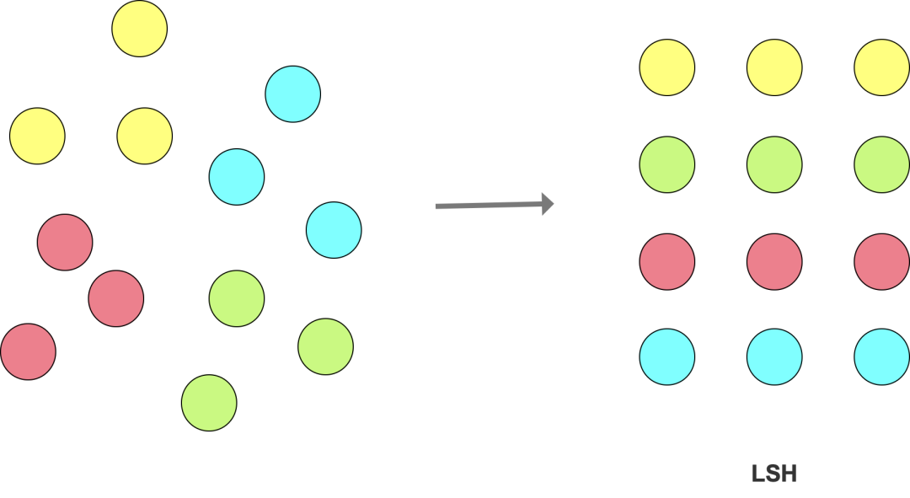
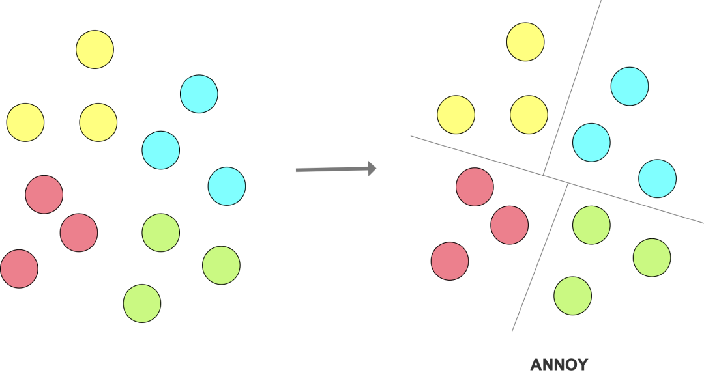
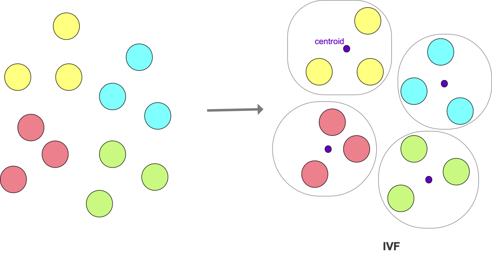
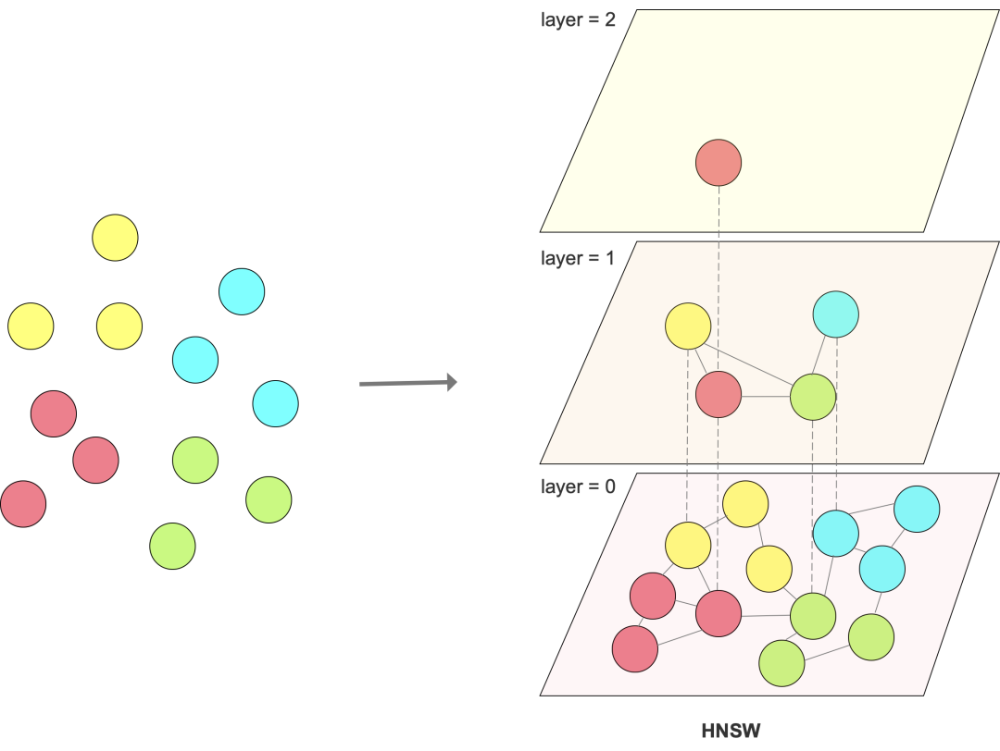

回顾
在文章「什么是向量数据库（一）」中已经提过，传统数据库无法很好的支撑：
- 语义搜索，依赖向量相似性（similarity）
- 计算相似性消耗大量计算资源，相比传统的 predicate（例如 filter）
- 大规模非结构化数据的存储和搜索
向量数据库的挑战
总的来说，向量数据库的目标就是：既要快速响应，又要结果准确。
下面将从查询处理、向量索引和存储技术上分别进行介绍。
查询处理
通过向量距离衡量相似度
通过计算两个向量之间的距离来评估向量相似度，下面是几种常见的计算方式。
给定两个向量 a 和 b，维度都是 D：
汉明距离（hamming distance）：
- 计算公式：
- 相似度范围：[0, D]
- 计算向量 a 和 b 在不同维度上值不同的数量，通常用于二进制向量；值越小，向量越相似
余弦相似度（cosine similarity）：
- 计算公式：
- 相似度范围：[-1, 1]
- 适用于关注向量的方向，而不是长度；值越大，向量越相似
欧氏距离（euclidean distance）：
- 计算公式：
- 相似度范围：[0, ∞)
- 适用于关注向量的长度，而不是方向；值越小，向量越相似
内积（inner product）：
- 计算公式：
- 相似度范围：[-1, 1]
- 适用于关注向量的方向和长度；值越大，向量越相似
NOTE：维度不相同的两个向量，无法计算相似度
增、删、改、查
对于增（insert）、删（delete）、改（update）这三类操作，在传统数据库中可以直接、方便地实现。在向量数据库中，向量是实际数据embedding的结果，所以，对于增、删、改，可以有两种不同的方式：
- embedding model 在向量数据库之外：向量数据库直接保存向量数据；由于向量的 size 比较庞大，所以通常在插入向量时，加上一个用户定义的 id，方便后续修改和删除该向量
- embedding model 在向量数据库之内（包括直接调用外部模型和内置的预训练模型）：对于用户来说，存储的是实际数据本身（例如文本和图片），而向量是被隐藏存储的一部分
对于查询 q，本质上是在向量集合中，找到与 q 最相似的 k 个向量（k ≥ 1）。假设向量集合中有 N 个向量，随着 N 逐渐变大，计算最优的近似向量并不现实，时间复杂度达到 O(N * D)，D 是向量的维度，所以，为了提高性能，设计了 ANN 算法，一个好的 ANN 算法要在速度快和找得准之间找到平衡点。
衡量向量的准确性通常通过 precision 和 recall：
- precision：c / k'，返回的结果中有多少是正确的
- recall：c / k，正确结果中有多少被找到
其中，返回的 k' 个结果中，其中正确的结果有 c 个，目标是找最相似的 k 个向量。

图1: 向量集合 vs 查询向量
向量索引
为了支撑高效的向量搜索，需要有合适的向量索引，目的是减少向量集合中需要与查询 q 计算相似度的向量数量。常见的向量索引可归纳为以下几大类。
hash-based
通过设计 hash function，将向量集合切分成不同的子集。在写数据时，每个向量通过 hash function，映射到某个 bucket，然后将数据写入到该 bucket；同样地，在搜索时，通过 hash function 找到向量所在的 bucket，然后将查询与该 bucket 中的全部向量进行对比，从而缩小需要计算相似度的向量数量。
LSH：LSH（Locality Sensitive Hashing）的核心思想是通过设计合适的 hash function，尽量提高 hash 冲突，使得相似的向量以高概率被映射到相同的 bucket 中，从而将相似的向量 group 在一起（跟传统的 hash 映射尽量减少冲突不一样）。

图2: LSH
tree-based
将向量集合拆分成搜索树（search tree）。搜索时，通过遍历树结构来查找相似的向量。跟 hash-based 的目标类似，通过将数据拆分成多个不同的子集，从而减少计算向量相似度的次数。
ANNOY：ANNOY（Approximate Nearest Neighbors Oh Yeah）使用二叉搜索树作为核心数据结构，原理是反复对向量空间进行切分，直到每个子集中包含的向量数量不超过k，并且仅在一小部分子集中进行最近邻的搜索。

图3: ANNOY
cluster-based
通过机器学习等方法将向量集合分成多个cluster，每个 cluster 有一个 centroid（中心）。
IVF：IVF（Inverted File index）的核心是使用K-means算法将向量集合划分成多个cluster。每个 cluster 中的向量，与所在 cluster 对应的 centroid 的距离比其它 cluster 的 centroid 近。

图4: IVF
graph-based
通过构建图结构，将距离相近的向量通过「边」连接起来。
HNSW：HNSW（Hierarchical Navigable Small Worlds）构建分层的图结构，即每一层对应一个图结构，层数越高，向量数量越少，连接越稀疏，最底层包含全部向量集合。通过这种方式，实现顶层图用于快速定位，底层图进行精确搜索。

图5: HNSW
为了提高搜索的性能，通常将索引加载进内存，这时候，对内存的要求会比较高，所以，向量量化技术（将索引编码成size更小的数据结构），例如SQ、PQ和BQ也常常被使用。除此之外，也会引入SIMD、GPU来加速查询。
为了提高搜索结果的准确度，混合搜索也会派上用场，例如，结合关键词搜索、标量搜索或多个向量的搜索。
存储技术
分布式存储
sharding（分片）：将向量数据库的数据分布在多个机器或集群上。在分布式系统中，通过 sharding，将数据切分成更小的数据单元（根据一定的规则，hash、range 或 geographic）并分散到多个节点，可提升并行处理的能力，获得良好的扩展性、load balancing 和容错。
- range-based sharding：根据有序的 key，将向量数据划分为不重叠的 key interval 或 range，从而将数据划分到不同的 shard 中，例如时间范围、ID范围
- hash-based sharding：根据某一列或多列的 hash 值进行分 shard
- geographic sharding：根据地理属性进行分 shard，例如 region、location。通过将数据存储在物理上更靠近用户的 shard 中，可以降低跨区域的网络延迟，并有助于遵守数据主权法规
partitioning（分区）：采用基于 range、list、K-means 或 hash 分区策略，优化数据局部性，目的是提高并发处理的能力、提高查询性能。
- range-based partitioning：根据有序的 key，将数据划分为不重叠的 key range
- list-based partitioning：根据一个列或多个列的值进行划分
- k-means partitioning：将数据分到 k 个 cluster 中，在同一个 cluster 的向量有相似性。对于大数据集，计算开销会比较大，特别是频繁更新需要 re-clustering 时
- hash-based partitioning：按照 hash 进行分区
shard 和 partition 的区别：shard 表示数据如何分布在多个节点上（水平扩展）；partition 表示数据如何在一台节点上组织（单个 shard 的数据如何组织，以便高效访问）
通过 caching 加速访问
将经常访问或最近使用的数据保存在内存中。传统数据库通常引入key-value store，例如 redis 做加速，然而不适用于向量数据库，因为向量数据是高维的，不同查询几乎不可能复用相同的向量数据。
以下是四种常见的 caching 方式：
- FIFO（first-in first-out）：cache 淘汰策略，当 cache 满了之后，淘汰最早被保存的 cache 数据
- LRU（least recently used）：淘汰最少使用的数据
- MRU（most recently used）：淘汰最近访问的数据，保留未来可能需要的、最近较少使用的
- LFU（least frequently used）：淘汰最不频繁访问的数据，适用于有稳定和长期热点的数据 pattern
通过 replication 实现高可用
通过将数据复制、保存多副本在不同的节点或集群中，来实现高可用。
以下是三种常见的复制方法：
- leader-follower replication：一个 leader，其它都是 follower，只有 leader 可以处理写请求，保障强一致性、简化对冲突的解决，但是引入了 leader 的可用性问题，需要处理 leader 的容错问题
- multi-leader replication：多个 leader，可以并发处理写请求
- leaderless replication：不区分 leader 和 follower，每个节点都可以处理读和写，可以避免单点失败，提高扩展性和可靠性，但是会带来一致性问题，需要协调机制来处理冲突
小结
本文主要从查询处理、向量索引和存储等角度介绍向量数据库中使用的技术。由于文章篇幅有限，对于各项内容只是简单描述，我认为其中的任意一项技术或算法，都值得单独一篇文章来阐述，后续如果有机会，将会挑选个人感兴趣的 topic 进行深入分享。
参考
- [1] Survey of Vector Database Management Systems：https://arxiv.org/abs/2310.14021
- [2] A Comprehensive Survey on Vector Database: Storage and Retrieval Technique, Challenge：https://arxiv.org/abs/2310.11703